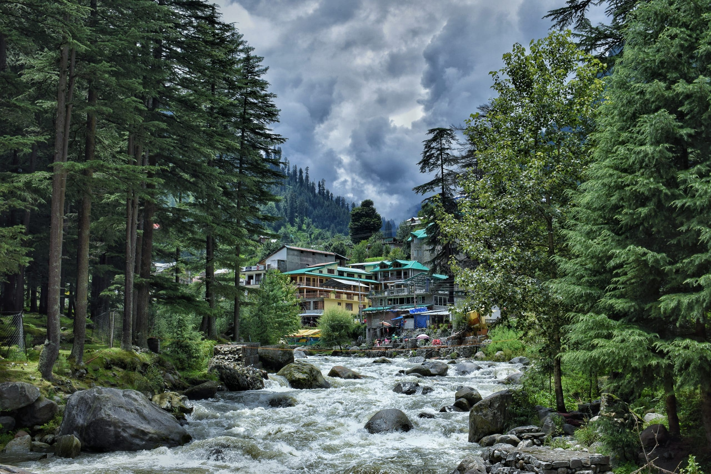

Snow-capped peaks, adventure sports, and stunning Himalayan valleys.

Manali is a high-altitude Himalayan resort town in Himachal Pradesh, located at 2,050 metres above sea level. It sits at the northern end of the Kullu Valley and is one of the most popular hill stations in India. Known for its scenic beauty, adventure sports, and proximity to Rohtang Pass, Manali attracts both adventure seekers and honeymooners. The Beas River flows through the valley, and the surrounding mountains offer trekking, skiing, and paragliding opportunities throughout the year.